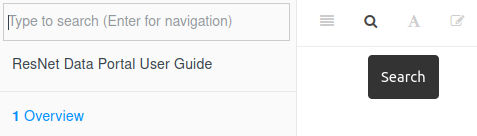

Chapter 7 Getting Help
7.1 Search
Click the search button in the toolbar at the top of the page (or press the F key). Matching words will be grouped by section.

7.2 Slack
The ResNet Slack is a great place for asking questions, sharing issues and solutions, and collaborating asynchronously.
Two channels relevant to the Data Portal are:
@data-portal-users- Discussions specific to using the Data Portal. Features, issues, shared content@data- General questions about data. Best practices for processing and managing, analysis methods, sharing external data sources
7.3 Data Office Hours
An informal time to drop in and chat about all things data: discovery, processing, analysis, visualization, development, publication… Brainstorm methods and troubleshoot workflows.
Typically on Wednesdays from 2-3pm ET over Slack. Contact John if you’d like to set something up then or any other time.
7.4 Request Support
When requesting support, it’s important to provide a detailed description of the problem you’re facing and specific information about your situation. Below are some guidelines for writing an effective support ticket.
Always include:
- Subject: A succinct description of the task you’re attempting and the issue encountered.
- Poor: “Can’t see file”
- Good: “Data Portal - Unable to view layer after upload”
- Objective: What are you trying to do?
- Issue: What obstacles or errors have you encountered?
- Troubleshoot: Have you tried any other methods?
- Supporting info: Screenshots, error codes etc.
If related to a dataset/layer, also include:
- Format
- Filename
- File size
- Projection (see Projection)
If related to the Data Portal, also include:
- Username
- Date and time
Send your support request email to resnet.data.portal@gmail.com.
7.4.1 Example
from: test.user@email.com
to: resnet.data.portal@gmail.com
subject: Data Portal - Unable to view layer after upload
Hello,
I uploaded a new layer to the Data Portal. The status page said the upload
completed, but now I'm unable to view it. This happened around 2pm EST on
2021-12-14. I retried uploading the layer but am still unable to view it.
[screenshot]
- username: test.user
- filename: user.test.raster.tif
- format: GeoTiff
- size: 1.2kb
- projection: WGS84 (EPSG:4326)
Cheers,
Test User